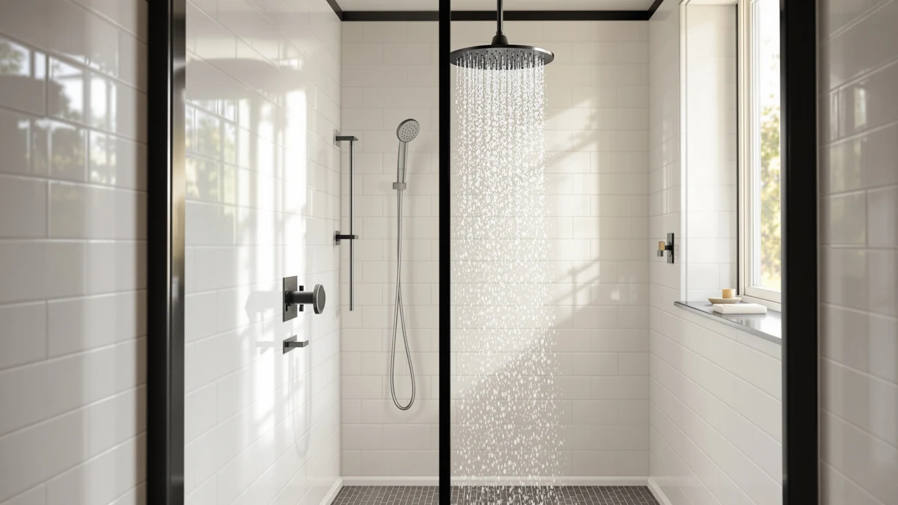

Best Moen Shower Heads of 2026: Engage, Magnetix & Ignite Reviewed
Prices and picks verified as of August 2026. Independent, reader-supported reviews.


Quick Answer
The best Moen shower heads balance a solid spray with the kind of finish and hardware that keeps working after a few years of daily use. Of the five models we compared, the Moen Engage Magnetix Chrome 3.5-Inch is the strongest pick: a magnetic detachable handheld, a $51.19 price, and a 4.4-star average across nearly 21,000 reviews.
Our pick: Moen Engage Magnetix Chrome 3.5-Inch, $51.19 Check Price on Amazon
Bottom line: our top pick is the Moen Engage Magnetix Chrome 3.5-Inch Six-Function Detachable at $41.99. The best budget option is the Moen Ignite Chrome Five-function Shower Head With 2.5 GPM at $21.28.
Things to Know Before You Buy
- Magnetix models cost more but add flexibility. Moen's Magnetix line lets you snap a handheld sprayer off a fixed head using a magnetic dock, which is useful for rinsing the shower, bathing kids, or washing pets.
- Finish affects long-term looks, not spray performance. Chrome shows water spots faster than Moen's Spot Resist Brushed finish, which is designed to hide fingerprints and mineral spotting between cleanings.
- Fixed-only heads are the budget route. If you don't need a detachable handheld, a fixed model like the Moen Ignite or the fixed Engage Magnetix costs noticeably less than the 2-in-1 versions.
- Review volume is a useful signal. A model with tens of thousands of verified reviews and a rating above 4 stars has a longer track record than a newer listing with a handful of reviews.
- All the picks here use standard chrome-plated ABS construction, which keeps upfront cost down compared to solid brass heads.
Finding the best Moen shower heads means sorting through a lineup that spans magnetic handheld combos, fixed rain-style heads, and finishes built to resist water spots, all at prices from about $21 to $90. Moen makes some of the most reviewed shower heads on Amazon, and that review volume gives you a real data set to compare instead of a handful of marketing claims.
We compared five current Moen models on price, material, spray configuration, and what verified buyers report after living with them. The Moen Engage Magnetix Chrome 3.5-Inch comes out on top for most bathrooms: it costs $51.19, adds a magnetic detachable handheld to a fixed head, and holds a 4.4-star average across 20,953 reviews, more feedback than any other model here.
Not every bathroom needs the same setup, though. If you want a larger 2-in-1 unit, the Moen 26009SRN Engage Magnetix 2-in-1 covers that at a higher price. If you need a reliable fixed head without the handheld hardware, the Moen Ignite or the fixed Engage Magnetix cost less and skip the extra moving parts. We break down where each one fits below.
Why You Should Trust Us
This guide to the best Moen shower heads was researched and written by Ilane Tall, home and bath expert at Best Shower Heads. Ilane covers bathroom fixtures for a living and builds every roundup from the same source data: current Amazon listings, published specs, and the review history each product has accumulated from verified buyers.
We do not run a physical testing lab and we do not claim to have installed these shower heads ourselves. Instead, we compare what's documented: price, materials, spray configuration, and what owners consistently report after using each model in their own bathrooms. Every product we recommend links directly to its Amazon listing so you can verify current pricing and reviews yourself before you buy.
How We Picked
We started with Moen's current shower head catalog on Amazon and narrowed it down to models with an established review history, since a large sample of verified reviews tells you more about long-term reliability than a product description does. We excluded listings with thin or inconsistent review counts and kept the models that buyers have actually put through daily use.
From there, we grouped the remaining models by configuration: 2-in-1 magnetic combos, fixed heads, and finish variants. That grouping matters because a Magnetix combo and a plain fixed head solve different problems, and comparing them purely on price would miss what each one is actually built for. We cross-checked prices and specs directly against the current Amazon listings so the numbers in this guide match what you'll see when you click through.
How We Compared
To rank the best Moen shower heads in this guide, we lined up each model's price, construction, spray configuration, and review record side by side. All five share the same ABS-and-chrome-plating build, so the real differences come down to whether a model includes a detachable Magnetix handheld, how many spray functions it offers, and how buyers rate it after purchase.
We weighted review count and rating heavily because a shower head with over 20,000 verified reviews and a 4.4-star average has survived years of real households, hard water, and daily use in a way a newer or less-reviewed listing hasn't yet proven. Reviewers consistently note how the magnetic dock on the Magnetix models holds up over time, and according to verified reviews, that connection point is the main thing that separates a good 2-in-1 head from an annoying one.
Our Picks

Moen Engage Magnetix Chrome 3.5-Inch
What we like
- Magnetic dock lets you detach the handheld with one hand and snap it back without lining up a bracket
- 4.4-star average across 20,953 reviews, the strongest review record of any Moen model in this comparison
- Chrome finish matches most standard fixture hardware
- Priced under $55, which undercuts the larger 26009SRN combo by close to $40
Flaws but not dealbreakers
- 3.5-inch head is smaller than the rain-style diameter on the 26009SRN
- Chrome shows water spots faster than the Spot Resist Brushed finish
| Material | ABS + chrome plating |
| Size | 3.5 inch |
The Moen Engage Magnetix Chrome 3.5-Inch is the model we'd point most people toward first. It combines a fixed head with a handheld sprayer that clicks onto a magnetic dock, so you can pull it free to rinse the shower walls, wash a dog, or bathe a toddler, then push it back into place without hunting for a mounting bracket. At $51.19, it sits in the middle of this lineup's price range while offering the same core Magnetix hardware you'll find on the pricier 26009SRN.
Its review record is what separates it from the rest of the field. Over 20,953 verified buyers have rated it, and the average holds at 4.4 out of 5, a volume and score combination none of the other four products in this roundup matches. That kind of sample size means the rating reflects years of real households running the head through hard water, hot showers, and daily wear rather than a handful of early impressions. The main trade-off is head size: at 3.5 inches, the spray face is smaller than the larger 26009SRN, so if you specifically want a wide rain-style spray pattern, the bigger model is worth the extra cost.

Moen 26009SRN Engage Magnetix 2-in-1
What we like
- Larger head than the 3.5-Inch Magnetix for a wider spray coverage
- Same magnetic quick-release handheld as the rest of the Engage Magnetix lineup
- Chrome finish matches common bathroom hardware
Flaws but not dealbreakers
- Costs about $39 more than the 3.5-Inch Magnetix for the same core technology
- Has a shorter review history than Moen's most established Engage models
| Material | ABS + chrome plating |
| Size | 5 |
The Moen 26009SRN Engage Magnetix 2-in-1 runs the same magnetic docking system as the Chrome 3.5-Inch, but in a noticeably larger head. If wider spray coverage matters more to you than shaving dollars off the price, this is the upgrade path within Moen's Magnetix lineup: same detachable handheld convenience, bigger footprint, higher price.
At $89.99, it costs close to 76 percent more than the smaller 3.5-Inch model, and that premium buys size rather than a different technology. Owners choosing between the two should weigh whether their shower actually benefits from the larger diameter or whether the compact version covers their needs at a lower cost. The chrome plating and ABS body match the rest of the Engage Magnetix line, so day-to-day durability expectations are the same across both.

Moen Ignite Chrome Five-function Shower
What we like
- Lowest price in this comparison at $21.07
- Five spray functions built into a single fixed head
- Chrome finish that fits standard shower arms without extra hardware
Flaws but not dealbreakers
- No detachable handheld, so you're limited to whatever the fixed head can reach
- Same ABS-and-chrome build as the pricier models, without the Magnetix docking feature
| Material | ABS + chrome plating |
| Size | Pack of 1 |
The Moen Ignite Chrome Five-function Shower is the budget pick here, and at $21.07 it costs less than half of even the cheapest Magnetix option. It skips the detachable handheld entirely and instead packs five spray functions into a single fixed head, giving you variety in spray pattern without any moving parts to worry about down the line.
That simplicity is the trade-off. You lose the flexibility of pulling a handheld off the wall to rinse the shower or bathe a pet, and you won't get the magnetic docking that Moen's Engage line is built around. For a guest bathroom, a rental, or anyone who wants a reliable upgrade over a builder-grade head without spending much, the Ignite covers the basics at the lowest price in this roundup.

Moen Engage Magnetix Shower Head
What we like
- Carries the Engage Magnetix name at $30.16, well under the 2-in-1 combo prices
- Chrome finish matches the rest of Moen's Engage lineup
- Simpler installation with no handheld hose or holder to mount
Flaws but not dealbreakers
- Sold as a fixed head only, so you don't get the detachable handheld that defines the 2-in-1 Magnetix models
- Less useful if your main reason for choosing Magnetix was the quick-release sprayer
| Material | ABS + chrome plating |
| Size | Showerhead |
The Moen Engage Magnetix Shower Head gives you the same chrome ABS build as the rest of the Engage family for $30.16, but as a fixed head only. It's a middle option between the cheapest Ignite and the full 2-in-1 combos: you pay a bit more than the Ignite for the Engage name and finish, but you skip the extra cost of a bundled handheld sprayer.
This makes sense if you already own a handheld attachment you're happy with, or you simply don't need one. Buyers who specifically want the magnetic detach-and-reattach convenience should look at the 3.5-Inch Magnetix or the 26009SRN instead, since this fixed version doesn't include that hardware. For a straightforward fixed-head upgrade at a mid-range price, though, it's a reasonable pick.

Moen Engage Spot Resist Brushed
What we like
- Spot Resist Brushed finish hides fingerprints and mineral spotting better than plain chrome
- 5.5-inch head, the largest fixed diameter in this lineup
- Brushed finish works well against nickel or stainless bathroom hardware
Flaws but not dealbreakers
- At $71.99, it costs more than every model here except the 26009SRN combo
- No detachable handheld, so you're paying for finish and size rather than added function
| Material | ABS + chrome plating |
| Size | 5.5-Inch |
The Moen Engage Spot Resist Brushed swaps standard chrome for a brushed finish designed to hide the water spots and fingerprints that show up fast in hard water areas. At 5.5 inches, it's also the largest fixed head in this roundup, giving you more spray coverage than the compact 3.5-Inch Magnetix without the added cost of magnetic handheld hardware.
The $71.99 price puts it above every option here except the 26009SRN combo, and you're paying for finish and head size rather than any extra function like a detachable sprayer. If your bathroom already fights visible water spots on chrome fixtures, or your other hardware is brushed nickel rather than polished chrome, this is the pick that matches both your maintenance routine and your existing finishes.
Quick Comparison
| Product | Material | Price | Rating | Best for | Get it |
|---|---|---|---|---|---|
| Moen Engage Magnetix Chrome 3.5-Inch | ABS + chrome plating | $51.19 | 4.4 | Most bathrooms wanting a 2-in-1 head | View on Amazon → |
| Moen 26009SRN Engage Magnetix 2-in-1 | ABS + chrome plating | $89.99 | 4 | Wider spray coverage with a handheld | View on Amazon → |
| Moen Ignite Chrome Five-function Shower | ABS + chrome plating | $21.07 | 4 | Lowest price with 5 spray settings | View on Amazon → |
| Moen Engage Magnetix Shower Head | ABS + chrome plating | $30.16 | 4 | Fixed-only Magnetix at a lower cost | View on Amazon → |
| Moen Engage Spot Resist Brushed | ABS + chrome plating | $71.99 | 4 | Hard water homes wanting spot resistance | View on Amazon → |
The Competition
Beyond the five best Moen shower heads above, we looked at several other Moen listings before narrowing the field. A number of Attract and Velocity series heads showed up in our initial search, but we set them aside because their review counts were a fraction of the Engage and Ignite models here, making it hard to judge how they hold up over years of use rather than the first few months.
We also passed on several third-party "Moen-compatible" replacement heads sold by resellers rather than Moen directly. Even when priced lower, they lack the verified review history and brand accountability of the models in this guide, and mixing them into a Moen-specific roundup would blur the comparison you came here for.
Within Moen's own lineup, we left out older Magnetix finishes that largely duplicate the Chrome 3.5-Inch and Spot Resist Brushed options above in function while adding little beyond a different color, and a handful of rain-shower-only heads without any handheld or multi-function option, which didn't fit this roundup's focus on versatile, well-reviewed everyday heads.